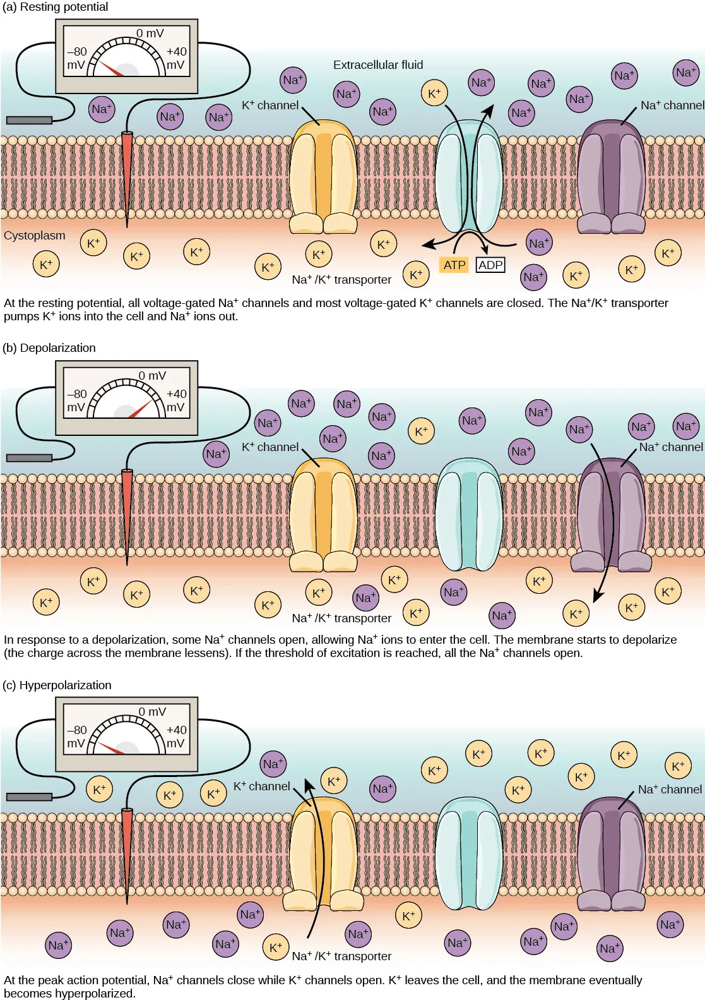
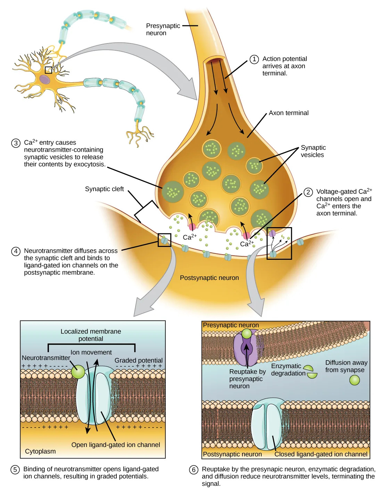

动作电位（Action Potential, AP）

- 阈电位约−55 mV；去极相Na⁺内流（达Na⁺平衡电位，超射至约+30 mV）；复极相K⁺外流；后超极化
- "全或无"特性、不衰减传导
- 不应期：绝对不应期（Na⁺通道失活，决定AP不能融合、传导单向性）→相对不应期→超常期→低常期
动作电位"全或无"是核心概念。注意：单个细胞AP全或无，但神经干的复合动作电位振幅随刺激强度增大（多纤维募集），非全或无——联赛高频陷阱。
静息电位（Resting Potential, RP）

动作电位（Action Potential, AP）
局部电位 vs 动作电位
| 特征 | 局部电位（EPSP/IPSP/终板电位/感受器电位） | 动作电位 |
|---|---|---|
| 总和 | 可总和（时间/空间总和） | 不可总和（全或无） |
| 衰减 | 呈电紧张衰减 | 不衰减传导 |
| 不应期 | 无 | 有 |
| 全或无 | 无 | 有 |
突触传递

传导速度